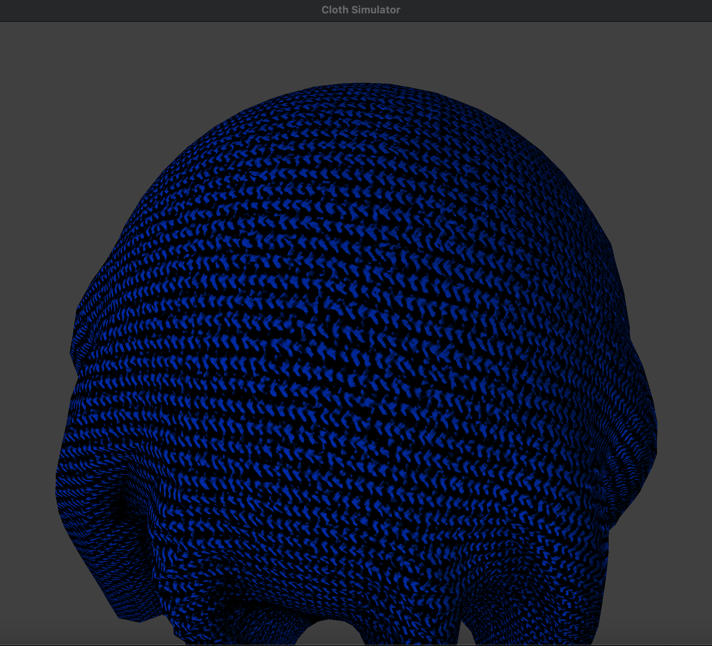

|
|

|
The main goal of our project is to create a local shading model (which is based on perceptual observation, not physics) that is more fit for cloth materials. We implemented two new shaders to the cloth stimulation rendering program: cloth and anisotropic shaders. Both shaders work as modified microfacet models with three main components: normal distribution, visibility, and diffusion. We also implemented a sheen color to the specular component of both the cloth and anisotropic lighting model in order to increase the realism and be able to render duochrome fabrics.
Due to the intensity and location of the specular component, our original code rendered very shiny results akin to plastic coated materials. In order to produce fabrics more aligned with the visual lighting found when rendering cloth materials, it was clear that the specular components would have to be adjusted. In Addition we also wanted to render textiles like satin and silk that while very shiny in nature, interact with light differently than what could be produced using the original code. To render these types of textiles we landed on using an anisotropic lighting model.
These two models: cloth and anisotropic were implemented in two separate shader frag files and utilized code from Bump.frag up until the Blinn-Phong Shading model as a starting point. By using the code from Bump the texture of the textiles was able to be rendered more realistically through lighting interactions, allowing us to overlay texture files.
Below are some new parameters shared between the two models:
Distribution/Visibility

Above is the specular component of our model. The numerator is our distribution while the denominator is our visibility term. Both of these equations are taken from our documentation. In implementing our specular component there was a choice between two possible distributions: the one we ended up using, “charlie”, and “ashikhmin’s velvet” (which you can see below). Ultimately we went with using the charlie as it was significantly easier to code which saves time for us and also ultimately requires less computation which is important when considering that these lighting models are implemented in shader files. Keeping computation as simple as possible will help to make sure performance issues do not occur.
Diffuse
Our diffuse component was super simple. The only calculations we chose to do was to divide our diffuseColor parameter by pi. Similarly to our justification for choosing the “charlie” distribution over the “ashikhmin’s velvet” we ultimately chose not to include the Fresnel term component in order to reduce performance issues and keep things simple. In addition when the fresnel term was implemented we did not see any discernible difference and therefore chose to leave it out, an action which the documentation we were using wrote as a good option.
The anisotropic model introduces one more parameter than the cloth model.

Distribution
|
|
|
This was our chosen distribution function, with h being the half angel and ùú∂ being our roughness parameter as defined before our cloth shader explanation. One of the key new factors in this distribution are the alpha-t and alpha-b variables. We calculated these variables according to the equations below:
In our documentation there were a few options in terms of how one could calculate the alpha-t and alpha-b values. Ultimately we chose this implementation for two key reasons: simplicity and results. Using the above definitions we were able to render very nice distinct anisotropic specular components without having to complete a plethora of operations. As our code is being done in a shader file it is vital to make sure it is as simplistic as possible in order to prevent performance issues.
Visibility

|

|
This is our visibility parameter as outlined in our documentation. With the lambda-v and lambda-t defined above.
The visibility, distribution and sheen color are multiplied together to create our specular component and then added to our diffuse, which utilizes the same code as our diffuse component in the cloth shader. Below is a visual of our diffuse + specular component that produces our final result. As you can see the sheen color plays a really interesting role in rendering the realistic looking fuschia silk.
While implementing the new shaders (based on the information found from our research paper) in the project, we had a pretty major bug in our specular component where when rendering there were these bright white flickering dots in the deep shadows of our sphere and cloth. This ended up being due to us multiplying by our nol variable without properly checking its bounds. Most of our debugging came in the form of making sure that new parameters were within the bounds that they were supposed to be and double checking the calculations of our various vectors.
Completing this project, we learned a lot about the components needed for realistic cloth rendering, and got to play around with a really cool modification of a microfacet model. Unlike what we had done previously our specular component is composed of a distribution and visibility term. The creation of the initial cloth shader was a lesson in understanding how not only the distribution and visibility components affect the specular aspects, but also how roughness the roughness parameter plays a key role. We were given an introduction to anisotropic lighting in the lecture, but we developed a much deeper understanding of what it was and how it works through this project. We explored different values of anisotropy and learned how it affected the reflection shape. Lastly, we deepened our understanding of density and spring constant values for rendering different types of fabric. We learned that denim should be denser with a high spring constant since it’s a heavier and stiffer material. We also learned that silk should have a lower spring constant since it’s flimsier.
|
|

|
|

|

|

|
Lucy: I worked on topic generation and participated in team zoom debug meetings. I made the drafts of the presentation slides. I started on the anisotropic lighting code, and set the density and spring constants for denim and silk. I generated images and gifs for the final presentation, and worked on the slides. I worked on the Technical Approach section in the Final Report.
Iman: I worked on topic generation, found the research paper (shown in references), found the textures needed for the cloths, helped find the right parameters needed to render different types of cloth, and also participated in team zoom debug meetings. I facilitated/scheduled meetings for when everyone is free to meet on zoom and work on the project together. I worked on the milestone writeup, presentation slides, and helped write/debug the code. I worked on the presentation slides and generated images for it. Lastly, I worked on the “Abstract”, and “Results” portion of the this report (and a bit on the “Technical Approach”).
Anna: I worked on topic generation, implemented the code for both two shaders, helped find the right parameters needed to render different types of cloth, and participated in team zoom debug meetings. I worked on the report, presentation slides, and generated images for it. Lastly, I worked on the “Technical Approach” section in the final report and helped write the script for the final video.
Ava: I worked on topic generation, participated in zoom discussions, and helped generate some simulations/scenes for demonstration purposes in presentation and videos. I worked on the presentation slides and recorded and edited the final video.